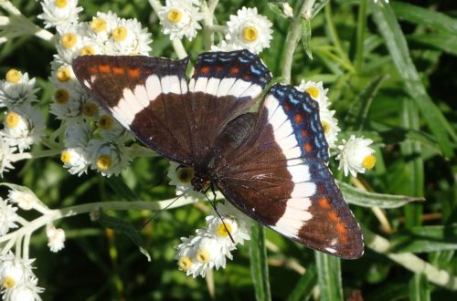
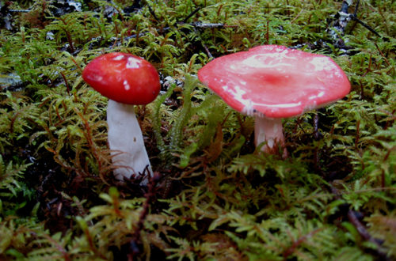

Our Nature Series
Notable Nature Series — 15 field guides by Henry Mann
The PSNP Trails are situated in a re-growth boreal forest typical of western Newfoundland and the Humber Valley. Trees and shrubs are the immediately most observable features, but the forest is much more than just trees – a host of life including plants, animals, birds, fungi and insects share the forest with the trees, most beneficial in complex ways to the health of the forest.
Our skiing, snowshoeing and walking trails are ideally situated for healthy outdoor exercise, but they are also a window into one of our most important ecosystems in the province.
“Travel our trails quietly and enjoy what nature has to offer. It is almost certain that your experience will draw you back again. Nature really does call if you just take the time to listen!”
Notable Nature Series
Currently this series features 15 available programs, prepared for the PSNP by Henry Mann, a club member and retired biology professor from the Grenfell Campus of M.U.N.
- Spring
- Summer
- Autumn
- Winter
- Year-round
Brochures & More
Note: tabs link out to the real PDF guides once Karen shares the files – brochures are a different, in-field format from the downloadable trail card discussed for The Chalet and Our Trails.

